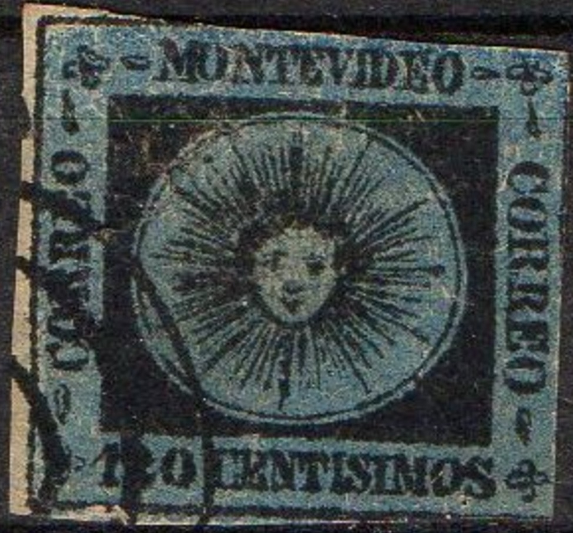
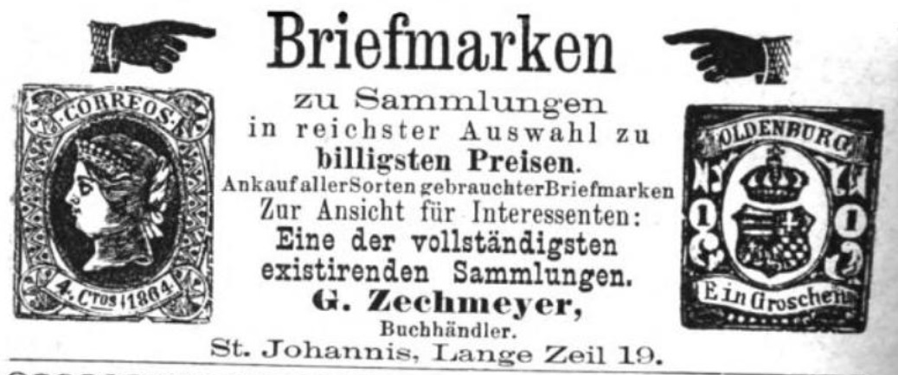

Advertisement of Zechmeyer in the Freiburger Zeitung 17 January 1889.
Note: on my website many of the
pictures can not be seen! They are of course present in the
catalogue;
contact me if you want to purchase it:
Georg Zechmeyer was a stamp dealer, toy dealer and stamp forger of Nurnberg (Germany). He was born in Ansbach in 1836. See for more information on Zechmeyer the book 'Philatelic Forgers, their Lives and Works' by V.E.Tyler. He died on 30 June 1899. He advertises in several newspapers:
Advertisement of Zechmeyer in the Freiburger Zeitung 17 January
1889.
Dealer label, 'G.Zechmeyer, Nurnberg Lange Zeile. Briefm.-
Geschaft'
On 27 February 1877 (according to one of his own advertisement labels, see Volume 1 of this catalogue under Bavaria), he acquired all remainders of the stamps of the Kreuzer stamps of Bavaria (including postal stationery) for 4005 Gulden. According to V.E.Tyler this included three and a half million stamps. He resells half of these stamps for 4000 Gulden to the stamp dealer Julius Goldner.
He also sold brochures with imitations of 40 classical worldwide stamps (source: Bund Deutscher Philatelisten e.V.). His sons, Jakob and Georg, continued the business after his death.
Examples of Zechmeyer forgeries of Brazil:

On
https://classiclatinamerica.com/wp-content/uploads/2021/01/Brazil-Forgeries_compressed_compressed.pdf
this forgery type is classified as Zechmeyer's, but I doubt that
this information is correct....

Zechmeyer forgery of the 1 Scudo stamp of the Papal States.

Zechmeyer forgery of the 4 Baj stamp of the Papal States. The
keys are touching the circle (left, right, top and bottom)

A Zechmeyer forgery of the 8 Baj value of the Papal States. The
design is rather badly done.


Badly done forgery of the 50 Baj Papal States, it exists with
various fancy cancels. It is also shown in the book 'Roman States
forgeries' by F.J.Levitsky with a cancel consisting of lines. It
has no dot behind "BAJ". The above forgery is shown in
'Philatelic Forgers' by V.E.Tyler and is attributed there to the
forger Zechmeyer.


Clara Rothe stamps presumably made by Zechmeyer;
http://elasca.eu/cara_clara_rothe.htm

Colombia forgery made by Zechmeyer.

A 120 c Uruguay forgery in the wrong color; black on blue.


Very blur forgeries of Spain with cancel "ZEITUNGS
EXPEDITION". Next to it an advertisment from Zechmeyer of Nurnberg (Germany) with an
image of the same forgery.
{kind=link}
{kind=link}